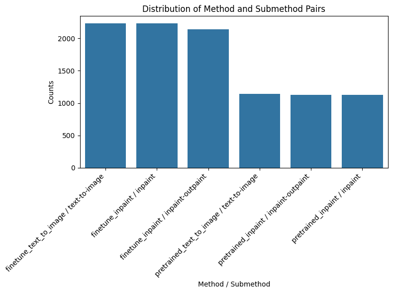
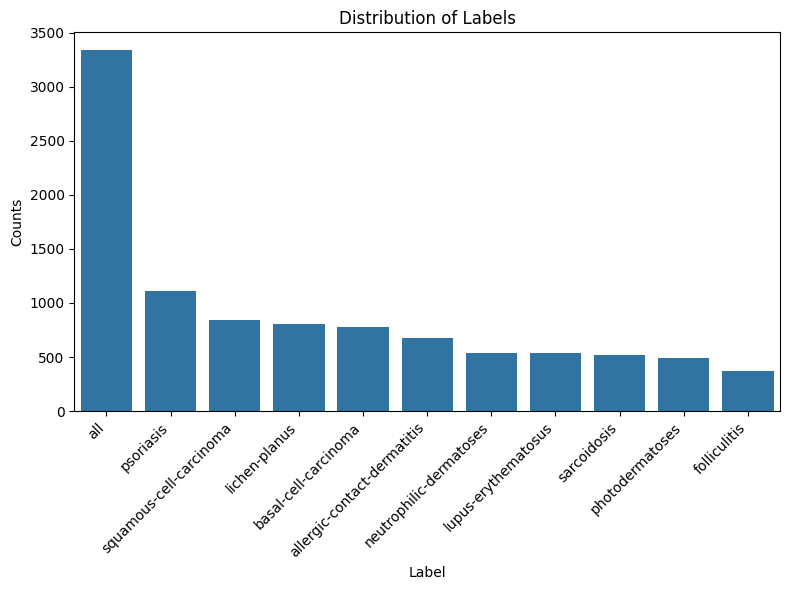
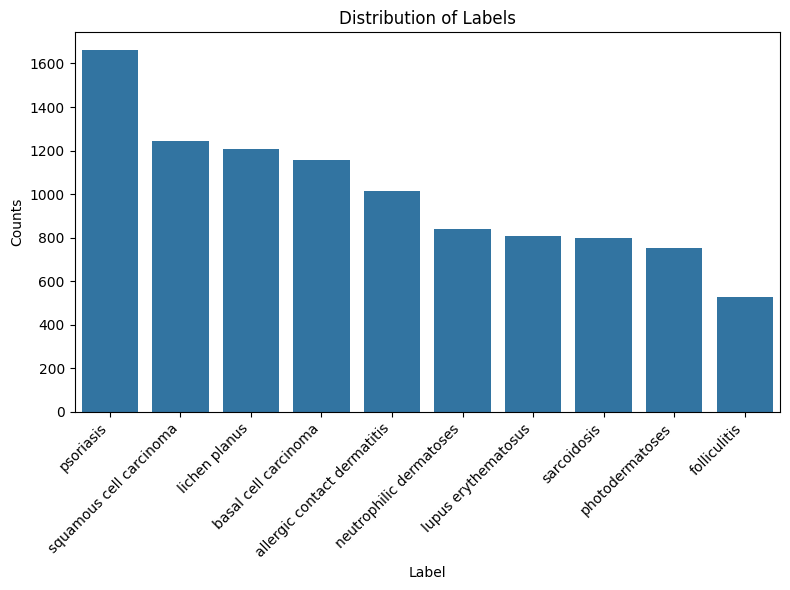
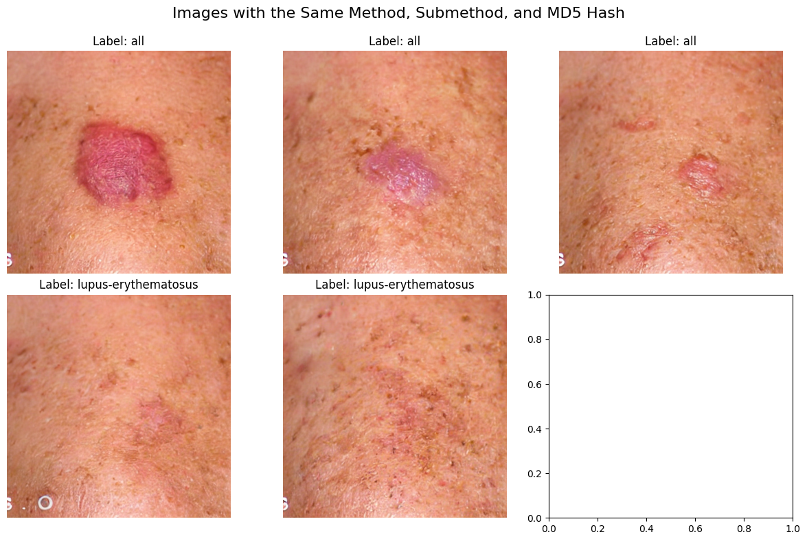

[1]:
from datasets import load_dataset
from IPython.display import display
import matplotlib.pyplot as plt
from PIL import Image
import seaborn as sns
import pandas as pd
import io
import os
[3]:
cache_directory = "/n/scratch/users/t/thb286/hf_cache"
dataset = load_dataset("tbuckley/synthetic-derm-350k", cache_dir=cache_directory, streaming=True)
[5]:
for image in dataset["train"]:
print(image)
break
{'__key__': 'finetune_inpaint_all_inpaint-outpaint_00_000e8dd5ee75dd6668e978e7a4e6fe54', '__url__': 'hf://datasets/tbuckley/synthetic-derm-300k@fda33262852d9aa8f0bf96650bdf1c40e1b7c584/data/shard-00000.tar', 'json': {'generation_num': '00', 'label': 'all', 'md5hash': '000e8dd5ee75dd6668e978e7a4e6fe54', 'method': 'finetune_inpaint', 'name': 'finetune_inpaint_all_inpaint-outpaint_00_000e8dd5ee75dd6668e978e7a4e6fe54.png', 'submethod': 'inpaint-outpaint'}, 'png': <PIL.PngImagePlugin.PngImageFile image mode=RGB size=512x512 at 0x7FD364184D90>}
[3]:
# Example for streaming the dataset:
dataset_iterable = load_dataset("tbuckley/synthetic-derm-10k", streaming=True, cache_dir=cache_directory)
subset = iter(dataset_iterable["train"])
selected_samples = [next(subset) for _ in range(100)] # Only select the first 100 samples
[4]:
# Assuming your dataset is already loaded and accessible as dataset["train"]
indices = []
methods = []
submethods = []
labels = []
md5hashes = []
for i, entry in enumerate(dataset["train"]):
indices.append(i)
json_data = entry['json']
methods.append(json_data.get('method', 'Unknown'))
submethods.append(json_data.get('submethod', 'Unknown'))
labels.append(json_data.get('label', 'Unknown'))
md5hashes.append(json_data.get('md5hash', 'Unknown'))
# Create a DataFrame
df = pd.DataFrame({
'index': indices,
'method': methods,
'submethod': submethods,
'label': labels,
'md5hash': md5hashes
})
[7]:
metadata = pd.read_csv("fitz_metadata/fitzpatrick17k.csv")
metadata = metadata.rename(columns={'label': 'label_fitz'})
fitz_merged = df.merge(metadata, on="md5hash")
[8]:
df['method_submethod'] = df['method'] + ' / ' + df['submethod']
method_submethod_counts = df['method_submethod'].value_counts().reset_index()
method_submethod_counts.columns = ['method_submethod', 'counts']
print(method_submethod_counts)
# Plotting
plt.figure(figsize=(8, 6))
sns.barplot(data=method_submethod_counts, x='method_submethod', y='counts')
plt.title('Distribution of Method and Submethod Pairs')
plt.xlabel('Method / Submethod')
plt.ylabel('Counts')
plt.xticks(rotation=45, ha='right')
plt.tight_layout()
plt.show()
method_submethod counts
0 finetune_text_to_image / text-to-image 2233
1 finetune_inpaint / inpaint 2231
2 finetune_inpaint / inpaint-outpaint 2140
3 pretrained_text_to_image / text-to-image 1140
4 pretrained_inpaint / inpaint-outpaint 1128
5 pretrained_inpaint / inpaint 1128

[9]:
label_counts = fitz_merged['label'].value_counts().reset_index()
label_counts.columns = ['label', 'counts']
print(label_counts)
plt.figure(figsize=(8, 6))
sns.barplot(data=label_counts, x='label', y='counts')
plt.title('Distribution of Labels')
plt.xlabel('Label')
plt.ylabel('Counts')
plt.xticks(rotation=45, ha='right')
plt.tight_layout()
plt.show()
label counts
0 all 3337
1 psoriasis 1112
2 squamous-cell-carcinoma 839
3 lichen-planus 801
4 basal-cell-carcinoma 778
5 allergic-contact-dermatitis 679
6 neutrophilic-dermatoses 541
7 lupus-erythematosus 535
8 sarcoidosis 518
9 photodermatoses 493
10 folliculitis 367

[10]:
#label_counts = df['label'].value_counts().reset_index()
label_counts = fitz_merged['label_fitz'].value_counts().reset_index()
label_counts.columns = ['label', 'counts']
print(label_counts)
plt.figure(figsize=(8, 6))
sns.barplot(data=label_counts, x='label', y='counts')
plt.title('Distribution of Labels')
plt.xlabel('Label')
plt.ylabel('Counts')
plt.xticks(rotation=45, ha='right')
plt.tight_layout()
plt.show()
label counts
0 psoriasis 1660
1 squamous cell carcinoma 1242
2 lichen planus 1206
3 basal cell carcinoma 1155
4 allergic contact dermatitis 1014
5 neutrophilic dermatoses 839
6 lupus erythematosus 806
7 sarcoidosis 797
8 photodermatoses 752
9 folliculitis 529

[12]:
unique_md5hash_count = df['md5hash'].nunique()
print(f'Number of unique md5hash values: {unique_md5hash_count}')
Number of unique md5hash values: 3331
[13]:
image_index = 2
grouped = df.groupby(['method', 'submethod', 'md5hash']).size().reset_index(name='counts')
groups_with_six_or_more = grouped[grouped['counts'] >= 5]
selected_group = groups_with_six_or_more.iloc[image_index]
selected_method = selected_group['method']
selected_submethod = selected_group['submethod']
selected_md5hash = selected_group['md5hash']
print(f"Selected Group:\nMethod: {selected_method}\nSubmethod: {selected_submethod}\nMD5 Hash: {selected_md5hash}")
matching_entries = df[
(df['method'] == selected_method) &
(df['submethod'] == selected_submethod) &
(df['md5hash'] == selected_md5hash)
]
matching_indices = matching_entries['index'].tolist()[:6]
labels = matching_entries['label'].tolist()[:6]
# Load images one at a time from streamed dataset
images = []
for idx in matching_indices:
img = next(iter(dataset["train"].skip(idx).take(1)))['png']
images.append(img)
# Display the images in a 2x3 grid
fig, axes = plt.subplots(2, 3, figsize=(12, 8))
axes = axes.flatten()
for img, ax, label in zip(images, axes, labels):
ax.imshow(img)
ax.set_title(f'Label: {label}')
ax.axis('off')
plt.suptitle('Images with the Same Method, Submethod, and MD5 Hash', fontsize=16)
plt.tight_layout()
plt.subplots_adjust(top=0.9)
plt.show()
Selected Group:
Method: finetune_inpaint
Submethod: inpaint-outpaint
MD5 Hash: 7d8f14bc6c617b6247380f77be1c8b94

[ ]:
[ ]: